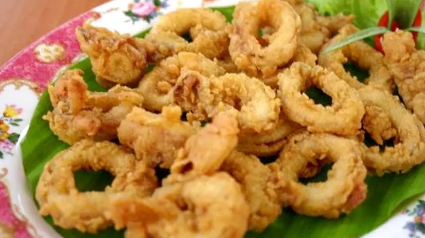

Tentang Kami
Restoran ini menjual berbagai macam jenis makanan/minuman seperti: Seafood, Aneka Ayam Bebek. Harga yang ditawarkan pun juga lumayan terjangkau dan menu-menu yang ditawarkan juga cukup bervariasi sehingga cocok disantap dengan teman dan sahabat anda.